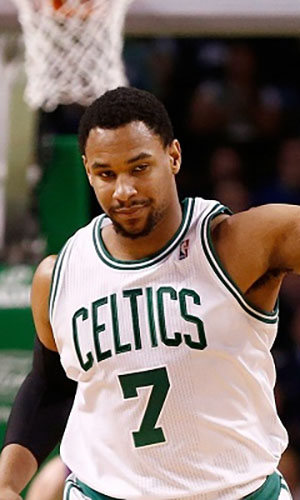

|  |
Матчи |
58 |
|
Передачи (всего/среднее) |
134 |
2.3 |
| В основе |
49 |
|
Подборы в защите (всего/среднее) |
294/font> |
5.1 |
| Время (всего/среднее) |
1566:21 |
27:00 |
Подборы в атаке (всего/среднее) |
147 |
2.5 |
| Очки (всего/среднее) |
773 |
13.3 |
Подборы (всего/среднее) |
441 |
7.6 |
| 2-очковые броски (всего/среднее) |
259/523 |
4.5/9 |
Перехваты (всего/среднее) |
44 |
0.8 |
| 2-очковые броски (% реализации) |
49.5% |
|
Потери (всего/среднее) |
78 |
1.3 |
| 3-очковые броски (всего/среднее) |
53/185 |
0.9/3.2 |
Блокшоты (всего/среднее) |
42 |
0.7 |
| 3-очковые броски (% реализации) |
28.6% |
|
Блокшоты соперника (всего/среднее) |
36 |
0.6 |
| Штрафные броски (всего/среднее) |
96/129 |
1.7/2.2 |
Фолы (всего/среднее) |
153 |
2.6 |
| Джаред Саллинджер |
Штрафные броски (% реализации) |
74.4% |
|
Коэффициент полезности (всего/среднее) |
739 |
12.7 |